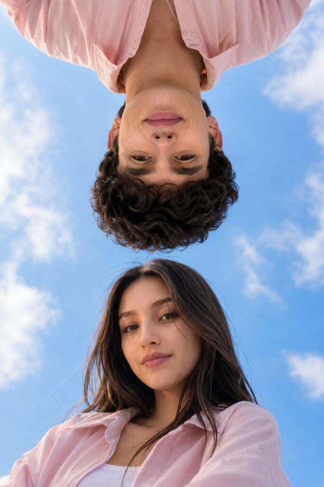
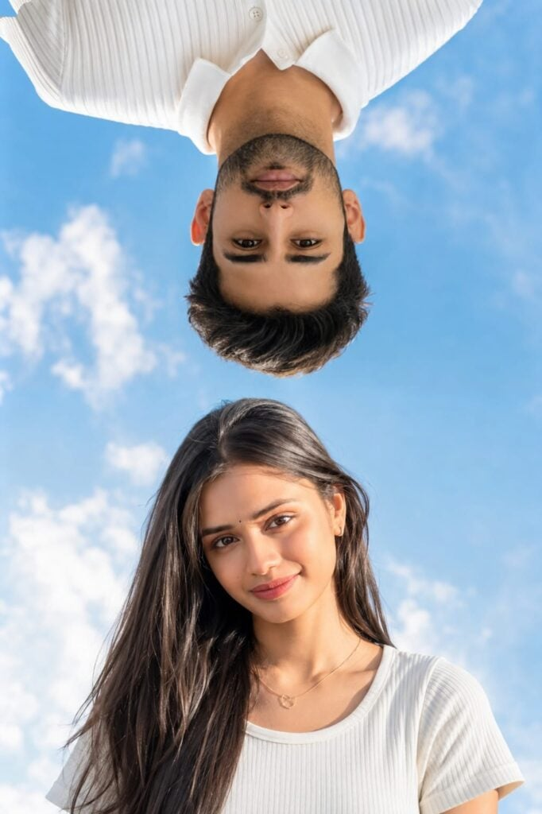
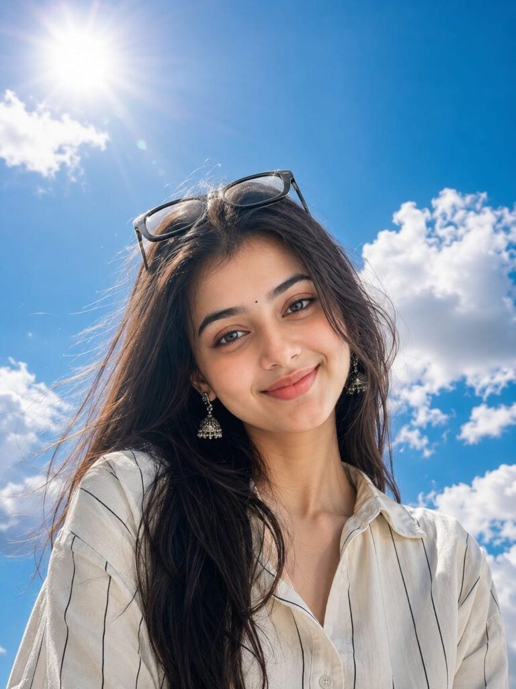
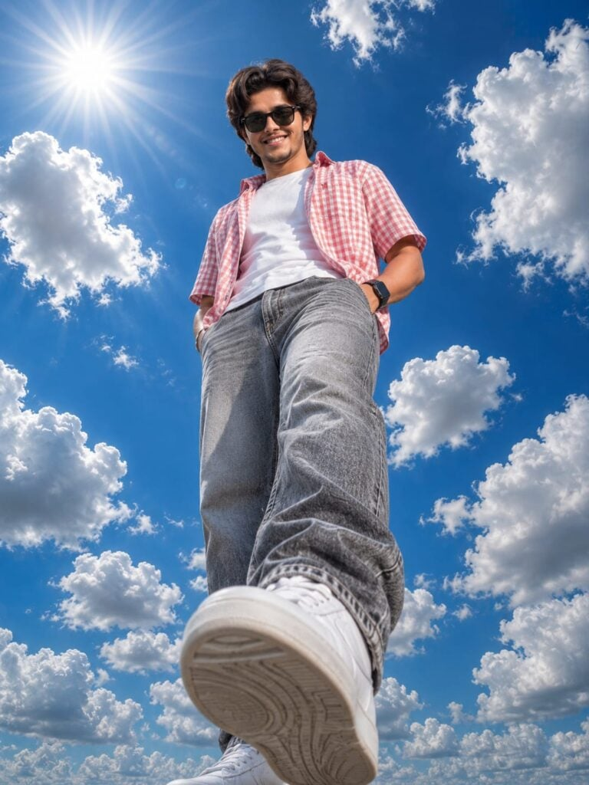
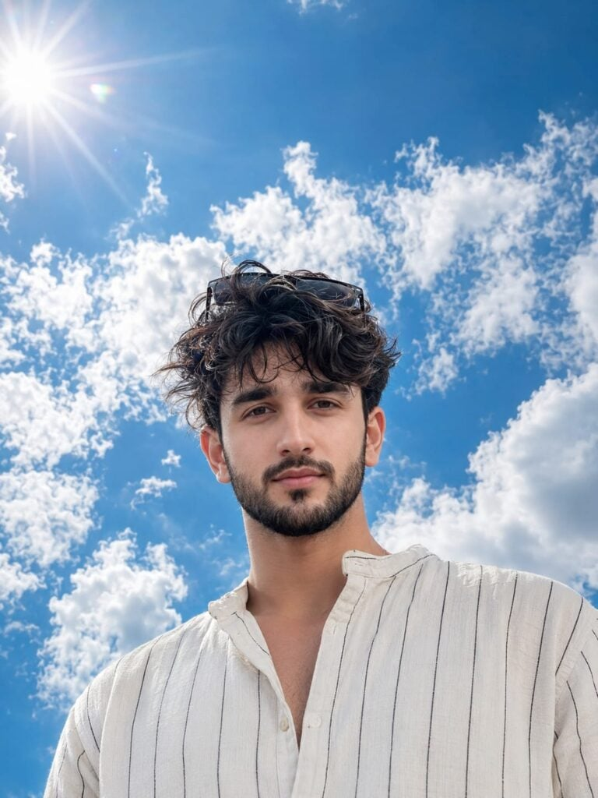
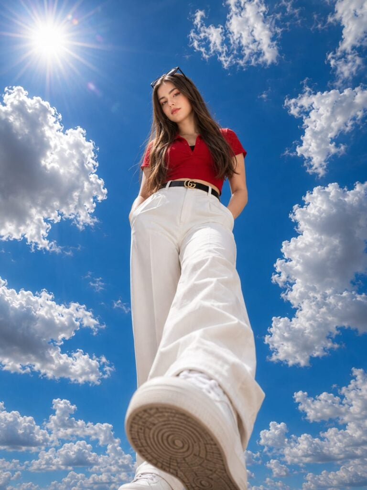

Ultra Realistic Cloudy And Sunlight Photo Prompt is a great choice for creating natural and cinematic AI images. The combination of soft clouds and warm sunlight gives every photo a realistic and premium look.
This type of prompt is perfect for portraits, outdoor photography, travel shots, and lifestyle images. It adds balanced lighting, realistic shadows, and beautiful colors that make the final image stand out.
In this article, you’ll get a powerful Ultra Realistic Cloudy And Sunlight Photo Prompt that works with ChatGPT, Gemini, and other AI image generators. Simply copy the prompt and start creating stunning, high-quality photos in seconds.
Want more awesome prompts?
Join our community and get the latest viral prompts daily.
Follow on Instagram





Ultra Realistic Cloudy And Sunlight Photo Prompt makes it easy to create realistic and visually appealing AI images. The natural lighting effect helps your photos look more professional and eye-catching.
Feel free to customize the prompt by changing the location, pose, outfit, or camera settings. Small changes can help you create unique images that match your own style.
If you found this prompt helpful, explore more AI photo editing prompts to improve your creativity. Keep experimenting with different ideas and enjoy creating amazing AI-generated images.